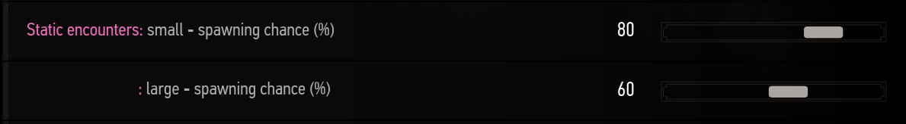

Everything you need to know about RER.Back to summary.
Static encounters are a bit different from the other encounters. They are not random and are handplaced by me on areas I think fit. The goal of the static encounters is to add respawning creatures to your world so that you can get materials and mutagens whenever you want. It is also a nice surprise to enter a cave and see a Ekimmara you didn't see in your vanilla playthrough or enter go to an abandonned village and see corpses everywhere with bandits around.
Static encounters are split in two categories, the large static encounters and the small static encounters. Large ones are those who spawn large creatures like a Leshen, a Griffin, a vampire etc... while small ones are small creatures like bandits, ghouls, wolves, bears, etc... By default static encounters do not have a 100% chance to respawn every time you reload your save but instead have 60% or 80% chance to add a bit of surprise and randomness to the thing. 